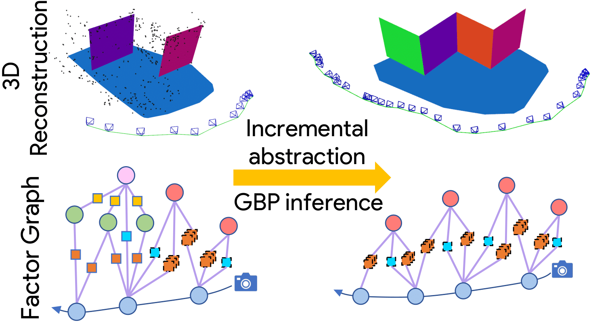
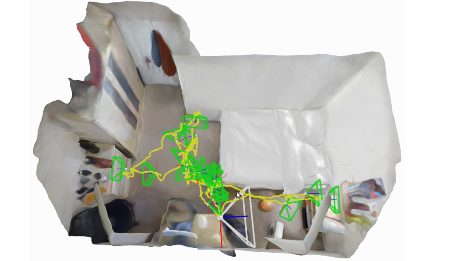

Bio
I am a final year Ph.D. student at Imperial College London, advised by Prof. Andrew Davison. Previously, I completed my undergraduate and Masters in Physics at the University of Oxford.
My research interests lie in building efficient real-time scene understanding systems for robotics. Towards this goal, my research focuses on two directions: 1) graphical representations and Gaussian Belief Propagation as a distributed inference algorithm for fast computer vision, and 2) training neural scene representations via continual learning for real-time robotics.
News
January 2022
Incremental Abstraction in Distributed Probabilistic SLAM Graphs accepted to ICRA 2022!
August 2021
I'll be interning at Facebook AI Research with Mustafa Mukadam this autumn.
July 2021
iMAP accepted to ICCV 2021!
July 2021
Check out our distill style Visual introduction to Gaussian Belief Propagation.
March 2020
Bundle Adjustment on a Graph Processor was accepted to CVPR 2020!
July 2018
Beginning a 3 months research as a visiting student as MIT CSAIL with the ALFA group!
Publications

Incremental Abstraction in Distributed Probabilistic SLAM Graphs
ICRA 2022

A visual introduction to Gaussian Belief Propagation
Self published / arXiv 2021

Bundle Adjustment on a Graph Processor
CVPR 2020